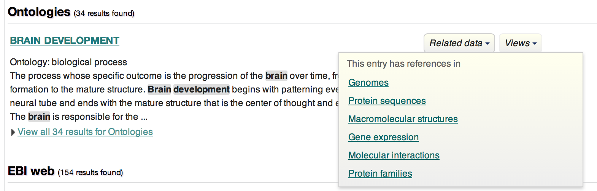
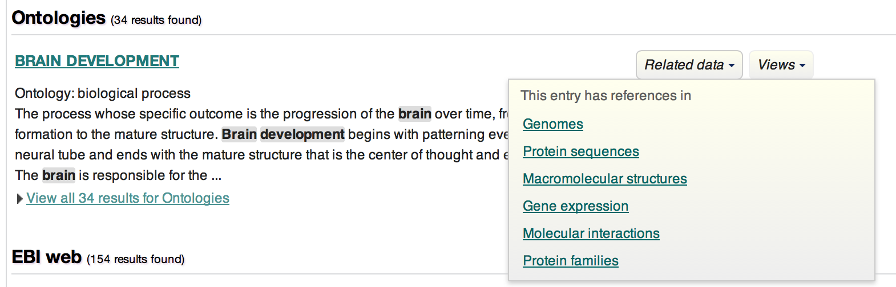
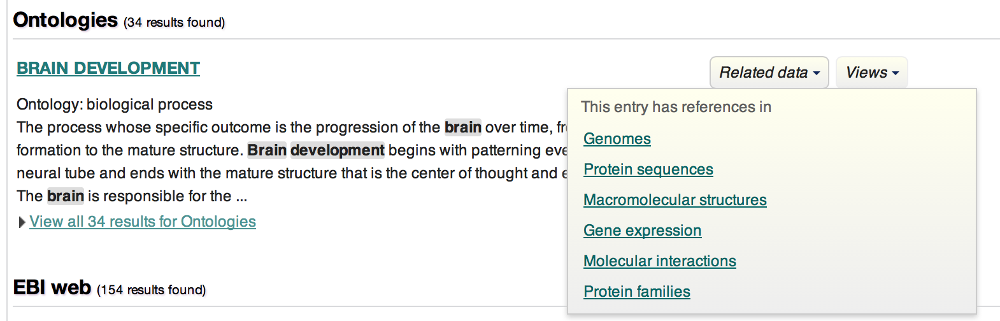

Inspiration from EBI - Links Between Categories
 

Looking for available tools (transgenics, antibodies, mutants/morphants) through the dedicated search interface
... Is it possible to identify genes that have in situ expression results in nervous system only, and exclude genes that have nervous system expression in addition to expression in other organs/tissues?
